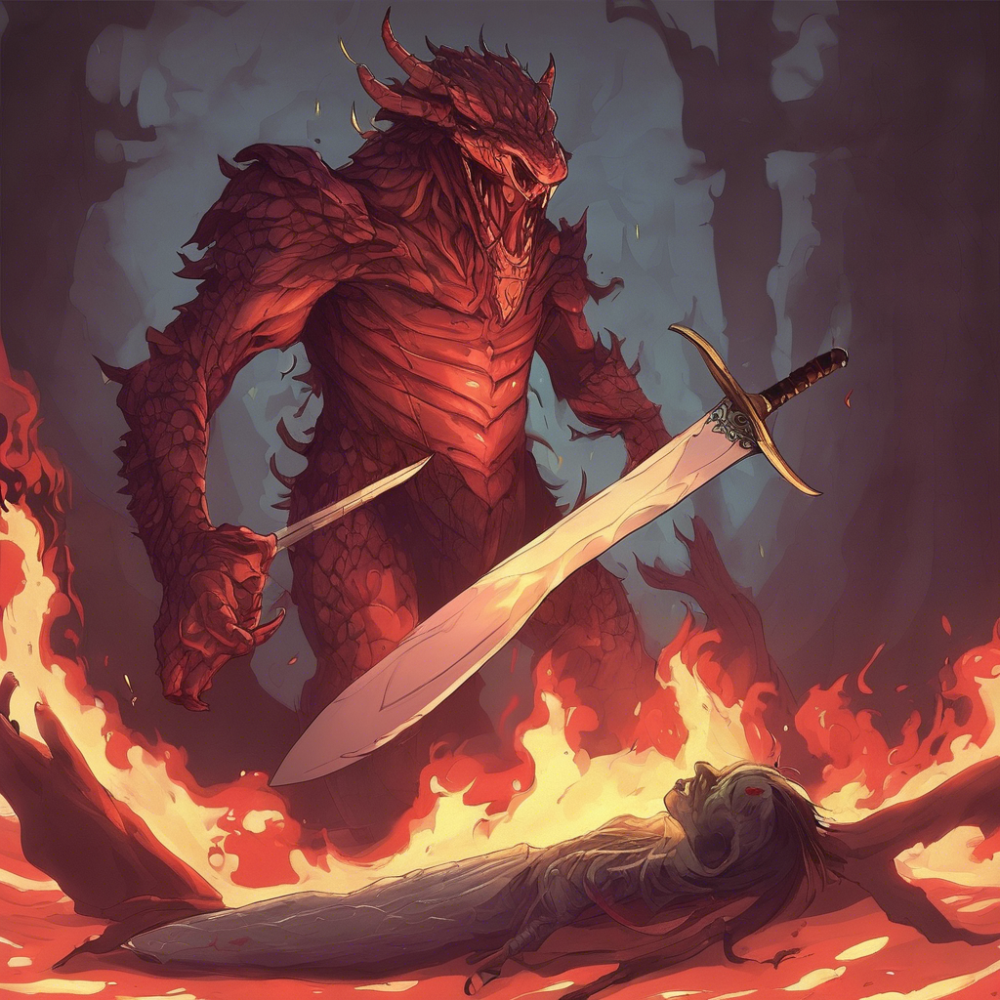

A lánglény felfigyel rád, és hatalmas karjával próbál feléd csapni. Azonban az amulett, amit korábban találtál, hirtelen felfénylik a nyakadban. A fény megzavarja az ellenséget – és te kihasználva a pillanatot, kardoddal a lény szívébe vágsz. Sikoltása betölti a kriptát, majd egy tűzrobbanás közepette eltűnik. Bár győztél, egy égési sérülés nyomot hagy a karodon. A folyosó végén egy vörös ajtó tárul fel, mely mögött mély csend uralkodik.
Menj a 9-es bekezdésre.